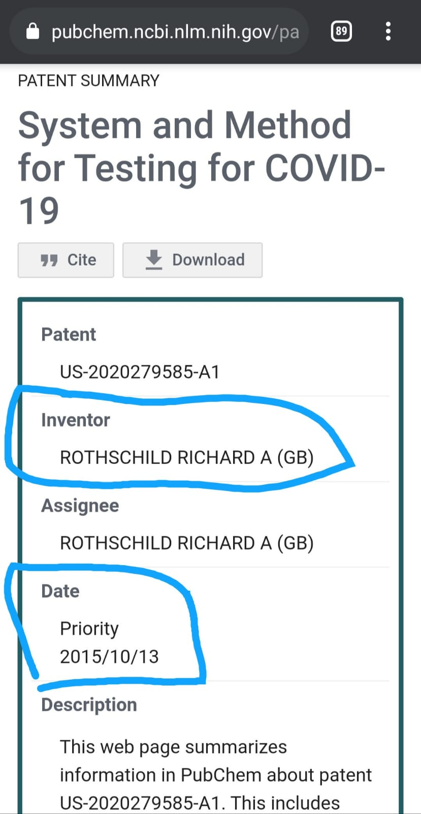

.png)
-You be the Judge-
Date: August 5th, 2021

Ever since Dr. David Martin began giving presentations explaining the history of patents behind coronavirus, SARS, Sars-CoV, and other related technologies as it relates to COVID-19, the Prior Patent Theory has been attacked by both the independent media and the mainstream.
So what information is possible to confirm by Dr. David Martin? What have his detractors got right, and what have they got wrong? What parts of the Prior Patent Theory have strong evidence? What parts do not? Let’s take a dive into some of these debates.
The Patents
He is now taking accounts from expert witnesses worldwide on crimes against humanity related to the government’s planning and response to COVID-19.
Analysis of Arguments against Dr. Martin by McGill University, Reuters, and the Truth Community
McGill University
Refuation
While the patented origins of the virus itself might be up for debate, this Provisional Application cannot be claimed to have language referring to other coronavirus technology in it because it says “COVID-19” quite explicitly. I detail the history of the term “COVID-19” below.
Criticism
“The mainstream view of intellectuals, present in commentators as different as Karl Mannheim and Edward Said, as “special custodians of values like reason and justice” (Hollander 2017:4) must be revised in light of the tremendous body of evidence in Hollander’s work. We must regain a skeptical perspective on the structural position and experiential predilections of the intellectuals, given the propensity of a significant minority of the class to fall into the kind of distorted, dangerous thinking and practice described in these books. To be sure, they may sometimes achieve reasonableness and justice, but they are also perfectly capable of the most stunning anti-realism, and they evince an overwhelming urge to assert themselves without evidence as high priests to whom others should defer that works in concert with their base desire for status and power” (Riley, 2017).
Reuters
Reuters argument in a nutshell:
Refuation
Instead of asking these obvious questions, Reuters attempts to conflate many of the other inventions Richard A. Rothschild has invented with his system for testing COVID-19. Thus, that date in 2015 is the crucial point of debate here. Instead of really addressing the issue, Reuters goes on to fill the other half of their article with unnecessary discussion of the patent since September 2020 and the “family” of other systems inventions Mr. Rothschild has filed. This is irrelevant to the conversation and is a form of red herring fallacy.
The people want answers to the following questions:
These questions are answered in the following section.
Critcism
A seminal work on modern media manipulation: Manufacturing Consent A Propaganda Model excerpted from the book Manufacturing Consent by Edward S. Herman and Noam Chomsky Pantheon Books, 1988
A scholarly article on how politicians lie along with the media: Kellner, D. (2007). Bushspeak and the politics of lying: presidential rhetoric in the “war on terror”. Presidential Studies Quarterly, 37(4), 622-645.
A detailed work on media manipulation from within the Truth community: Dice, M. (2017). The true story of fake news: How mainstream media manipulates millions. Mark Dice.
I would also recommend brushing up on some Glenn Greenwald : Glenn Greenwald's Substack
As Donna Laframboise brilliantly details:
“Anyone who still imagines that mainstream news outlets are trustworthy needs to spend a few hours reading Greenwald. Any young person dreaming of becoming a journalist needs to familiarize themselves with the terrain he describes. In his words, ‘modern media outlets do not air dissent; they quash it.’ Rather than being curious about the world, journalists are now “desperate not to know” about any facts that might cast people and political movements they support in a negative light. Greenwald demonstrates how reporters, en masse, recently went to extraordinary lengths to bury and ignore inconvenient events, even though a national election was mere days away. Incredibly, these same journalists then have the chutzpah to complain society is awash in fake news. Greenwald doesn’t beat around the bush: ‘It is the mainstream U.S. media itself that deceives, propagandizes and spreads disinformation…far more than any other faction or entity” (Laframboise, 2021).
Independent Media
Refutation
Criticism
Let’s Take a Deep Dive into the Questions the “Fact-Checkers” didn’t Inform Us About
1.What is the Provisional Patent Application Mr. Rothschild filed?
In order to submit a Provisional Patent Application one should submit the form SB/16. In addition to drawings of the invention that are requested, but not required, the USPTO states, “To be complete, a provisional application must also include the filing fee as set forth in 37 CFR 1.16(d) and a cover sheet* identifying:
One key item that is listed here is the “title of the invention”, which must be declared when the Provisional Application is filed.
According to the National Institute of Health (NIH), the title of this invention when it was filed on October 13, 2015 was “System and Method for Testing for COVID-19” . This means that whoever the inventor of this technology is, Richard A. Rothschild in this case, must have thought of this idea before “COVID”-19 was ever named as such publicly otherwise he would not have been able to name his invention as such.
Here is a link to the Instruction Guide to fill out the Provisional Application Form SB/16
Here is a link to the Cover Sheet for the Provisional Application Form SB/16
2. Why was the term “COVID-19” used in the title of this patent before 2020?
“Covid as a contraction of coronavirus disease seems to have been coined for the outbreak that began in China in 2019 (COVID-19).”
Officially, the term was coined by the World Health Organization (WHO) on February 11, 2020: “WHO announced “COVID-19” as the name of this new disease on 11 February 2020, following guidelines previously developed with the World Organisation for Animal Health (OIE) and the Food and Agriculture Organization of the United Nations (FAO).”
Even more confusing, according to the journal Nature, the disease that causes COVID-19 is called “SARS-CoV-2”, but was only renamed as such in late 2019. Prior to this it had been known as “2019-nCoV.” The article explains how important naming conventions are and how the WHO’s designation of the disease as “coronavirus disease 19” was in order to separate it from the virus SARS-CoV-2 to avoid the problem that occurred previously, “...of confusing virus and disease, as has been the case over many years with SARS-CoV (the virus) and SARS (the disease)”.
Among this naming confusion, Richard A. Rothschild was able to choose the right title for his Provisional Patent Application in 2015, even though the WHO, virologists, and the “Coronaviridae Study Group (CSG), a working group of the ICTV”, were still debating over the name and whether SARS-CoV-2 constituted a substantially different enough variation of the previously known SARS-CoV-1. He was even able to name the disease (COVID-19) caused by the as of yet unknown and unnamed virus SARS-CoV-2. Pretty impressive prediction capabilities indeed.
So how did Mr. Rothschild know to title an invention for a term that hadn’t been invented yet? How did that happen? Let’s have a look at Mr. Richard A. Rothschild.
3. Who is the Listed Inventor, Richard A. Rothschild?
When most informed people hear the name Rothschild, they think of the overly wealthy and overly powerful Rothschild banking dynasty out of Europe. You would be forgiven. While they do stand to benefit immensely from the Great Reset now being propagated “due to COVID-19”, whether this Richard A. Rothschild is related to the same international banking dynasty is yet to be established and would be an excellent topic for deeper research.
Now that it has been established beyond a reasonable doubt that Mr. Rothschild was the named inventor of a “System and Method for Testing for COVID-19” in 2015, perhaps there will be more public energy behind finding who this person is.
Presently, we await the potential public reveal of Richard A. Rothschild, the inventor behind the “System and Method for Testing for COVID-19” that had its Provisional Patent Application filed on October 13, 2015.
This story’s ending is thus left unwritten... for now.
Come out, come out, wherever you are Mr. Rothschild. We all want to get to know the prophetic inventor.